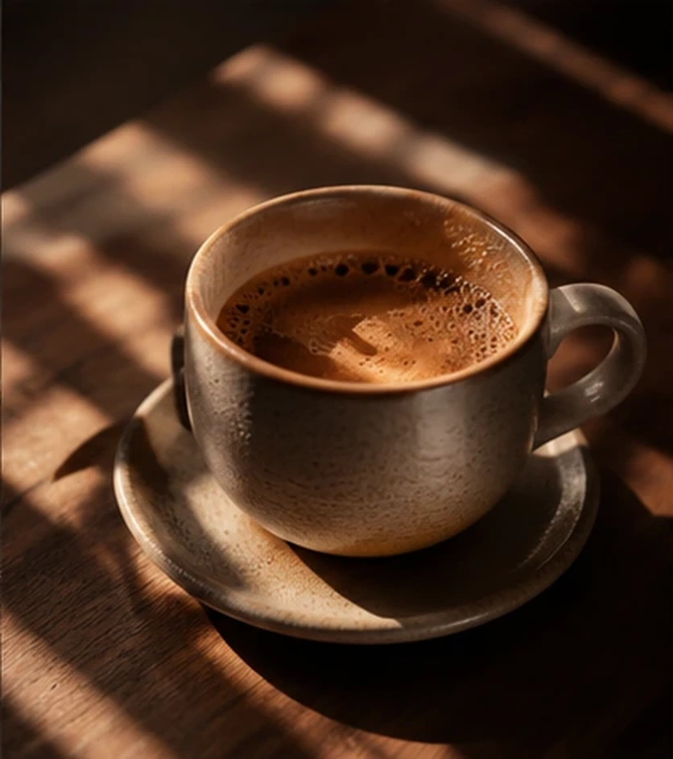
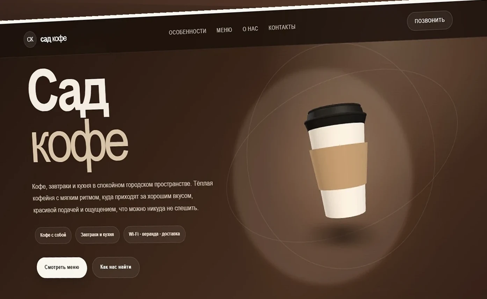

О проекте
Задача,
дизайн и реализация.
Задача
Передать атмосферу кофейни и представить информацию, необходимую посетителям.
Решение
Подобрал тёплую палитру и фотографии, разработал меню и адаптивные страницы.
Интерфейс проекта

Детали проектаФункциональность
Функциональность
и детали проекта.
- Атмосфера
- Меню
- Точки контакта
- Адаптив
Авторский демонстрационный проект для исследования дизайна и интерактивных интерфейсов.